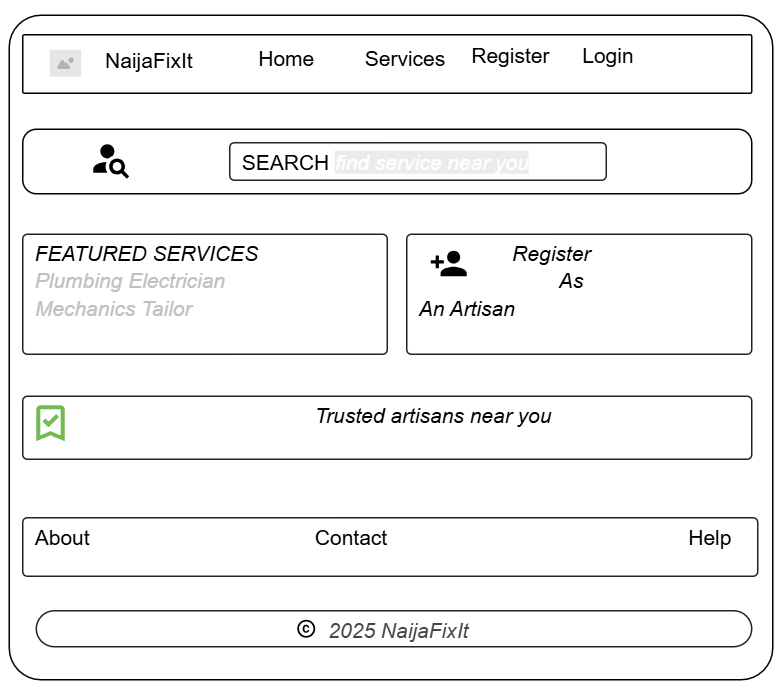
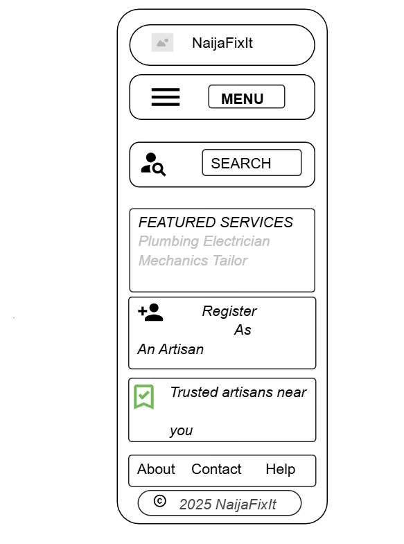

Site Name: NaijaFixIt
This website is a simple platform that connects people to nearby artisans like electricians, plumbers,
tailors, and others who offer useful services
Site Purpose
The website will have pages that allow users to find artisans based on their location and service type. It
will also have a form where artisans can register their services
Scenarios
- How can I find a certified electrician near my area quickly?
- Where can I register as a plumber to offer my services?
- How can I know if an artisan is trustworthy or has good reviews?
Colour Schema
- Primary Colour(#80CED7): Used for headers and navigation
- Secondary Colour(#007EA7): Used for background and content section
- Accent-1 Colour(#003249): Used for action buttons or links
- Accent-2 Colour(#CCDBDC): Used for font Colour
- Accent-3 Colours(#80CED7): Used for other things
Topography
- Roboto: Used for the entire website design
website Wireframes

